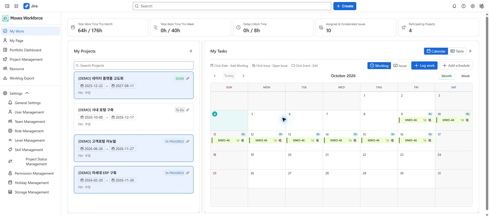
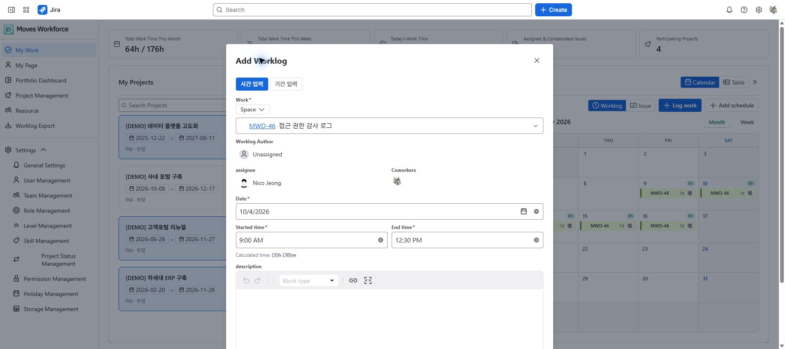
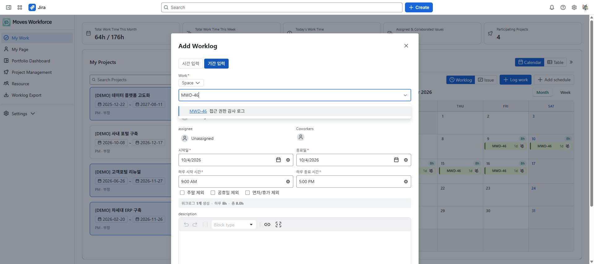

Review draft: English screenshots were captured on the designated staging site on 2026-10-04 and are shared by both language guides. The deployed version and role-specific access and save operations remain under review.
Use My Work to see your projects, assigned and collaborative issues, and recorded time. It supports daily time entry and weekly schedule reviews.
This is a personal work view for users with access to the app. You need permission to view the Jira issue. Creating worklogs requires Work On Issues, editing your own entries requires Edit Own Worklogs, and deleting them requires Delete Own Worklogs. Time tracking must also be enabled.
| Field | Example | Check before submitting |
|---|---|---|
| Work item | DEMO-12 Write test scenarios | The key and title identify the work you actually did. |
| Date | 2026-10-05 | This is the actual work date. |
| Start / end | 09:00 / 12:30 | End is later than start; calculated duration is 3 hours 30 minutes. |
| Description | Prepared test scenarios | Someone reviewing the entry can understand the activity. |
Select the date to open the add dialog, choose the issue, and enter the fields. After submitting, open the daily entry and compare its issue, date, and duration with your input. Split the entry into working intervals when you need to exclude a break.
Expand the issue's worklogs in the table or open its calendar entry. Confirm the author, issue key, date, and duration before editing. Change the incorrect date/time or description, submit, and check the updated entry and daily total. To delete, use the entry's delete action and check that the record has disappeared. Editing and deleting require the corresponding Jira permissions; a missing action does not mean you should create another entry as a replacement.
| Area | What to check |
|---|---|
| Summary | Recorded time for today, this week, and this month; assigned and collaborative issues and projects |
| Your projects | Participation and your project role and level |
| Calendar | Monthly or weekly worklogs or issue schedules |
| Table | Issue-level work and expandable worklog entries |

My Work summary, participating projects, and monthly worklog calendar.
Target time uses your organization's working-hour and holiday settings. For example, 8 hours per day across 5 working days gives a weekly target of 40 hours. A difference from the target is not, by itself, a measure of performance.
For the same work across several dates, use period entry. Check the date range, daily duration, and weekend and holiday options, then review the dates to be created. If saving produces failures, first check successful entries to avoid duplicates.

An unsaved worklog with a sample issue and times of 09:00–12:30, calculating 3 hours 30 minutes.

Period entry with date range, daily start/end times, and weekend, holiday, and leave exclusions. Review the record count and total time before saving.
| Mode | What it shows | Purpose |
|---|---|---|
| Worklogs | Recorded time and daily totals | Review when and how much you worked |
| Issues | Start and due dates for assigned and collaborative issues | Review schedules and deadlines |
Issues without start and due dates may not appear as calendar bars. Check the unscheduled-issues list and ask an authorized person to set their dates. Dragging a worklog to another date changes its recorded date; check the result after moving it.
| Symptom | Check in this order |
|---|---|
| An issue is missing | Search and space filters → assignment or collaboration → ability to open the issue in Jira |
| Save fails | Date and duration → Jira time tracking → Work On Issues → the error message |
| Edit or delete is missing | Whether you authored the entry → the relevant Jira permission |
| A project is missing | Project membership → the app's project visibility scope |
Use My Page for period-based contribution and permissions, or Worklog export for broader extraction.
Path: Jira Apps → Moves Workforce → My Work. Distinguish time records, personal schedules, and Jira issue schedules.
| Control or field | Function, conditions, and data affected | Result check and recovery |
|---|---|---|
| Calendar / Table | Display your work as a calendar or table. Switching does not create or delete worklogs. | Expand an issue's entries in the table or select a calendar date/entry to inspect it. |
| Worklog / Issue mode | Worklog mode shows logged dates and time; Issue mode shows issue start/due dates. The populations differ even within the same month. | Check the mode before diagnosing a missing bar; in Issue mode also check unscheduled issues. |
| Today / previous-next / month-week | Move the displayed date or period. Changing the visible month/week does not change recorded dates. | Check the period heading after navigation; do not mistake an old entry for today's work. |
| Log work | Open the worklog dialog. You need access to the chosen issue, Jira Work On Issues, and time tracking. | Opening the dialog does not create a record. Submit the fields and verify the actual entry. |
| Issue search / space | Find and select an issue by key or title. A space filter narrows search; it does not grant access. | Recheck the selected issue after changing spaces. Clear restrictive filters and check the original Jira issue if results are empty. |
| Date, start, end, calculated duration | For single-date entry, end must be later than start. 09:00–12:30 is 3 hours 30 minutes. The calculated duration is the recorded time; breaks are not automatically deducted. | Split intervals to exclude breaks; after submission verify issue, author, date, and duration. |
| Period entry and exclusions | Set the date range and daily start/end times. Weekend, holiday, and leave exclusions change the included dates and record count. | Review preview count/totals before submitting. After a failure, read the cancellation result and enter only dates missing from the remaining correct records. |
| Description | Describe the activity. Saving an existing entry can be restricted if its description could not be loaded, to avoid losing content. | Reload before editing rather than overwriting a failed-to-load description with an empty value. |
| Edit/delete entry / drag to another date | Editing your entry needs Edit Own Worklogs; deleting needs Delete Own Worklogs. Dragging a worklog changes its actual recorded date. | Check the entry and daily totals after saving. Correct a wrong move by editing the entry, not by adding a duplicate. |
| Add schedule / type | This is a personal schedule, separate from a worklog. Selecting its type sets a default availability ratio; enter start/end dates. | End cannot precede start. Adding a schedule does not create a Jira worklog. |
| Schedule availability / description | Enter the available share: 0 means no availability, 1 a full day, and 0.5 half a day. This is used in leave/capacity calculations. | Recheck the ratio after changing type. Do not interpret it as hours of work already logged. |
| Update/delete/cancel schedule | Update changes the selected personal schedule; delete removes it after confirmation. Cancel closes unsaved input. | Deleted schedules cannot be recovered. For a not-found/forbidden message, check the target and owning account. |
| Collapse panel / resize | Collapse My Projects/Tasks or drag the boundary to resize the list/calendar. Double-click the boundary to restore its default width. | Only the displayed space changes. Reopen the panel to check the selected work. |
Submitted time is a Jira worklog. Do not enter the same work separately in Jira and the app. If cancellation of period entry is incomplete and you cannot delete residual entries, ask an administrator to resolve them.